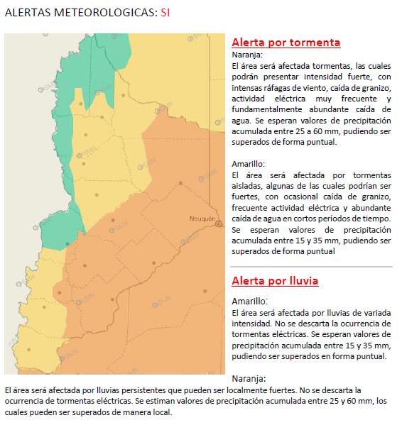

Alertas Provincia Neuquén
Información sobre Subsecretaría de Defensa Civil y Protección Ciudadana El 29 de Mayo de 1974, en la Legislatura de la Provincia del Neuquén fue sancionada la Ley Provincial N°841, que da origen a la Defensa Civil como organismo de protección y cuidado de la ciudadanía sus bienes y el ambiente antes, durante y después de una emergencia articulado roles y funciones de diversos organismos municipales, provinciales y Nacionales.